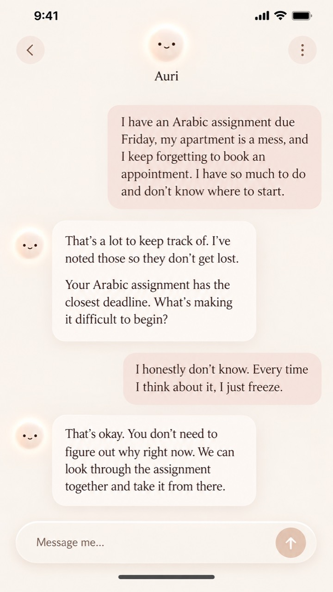
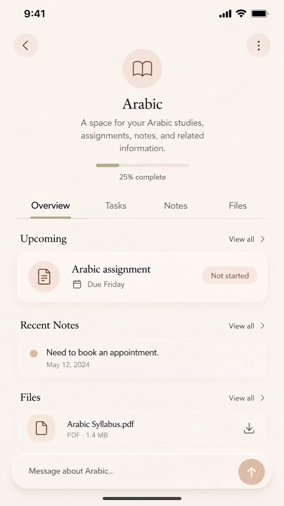

The personal assistantthat adapts to you.
Zaynab OmerFounder
Executive-functioning difficulties can make everyday life overwhelming.
The tools meant to help can become another thing to manage.
02 — 07
Auri helps take some of the mental work out of managing everyday life.
You can talk to Auri naturally about what’s going on.
Auri keeps track of tasks, plans, and important information.
If something isn’t helping, Auri changes its approach.
03 — 07


04 — 07
Auri is starting with people who struggle with executive functioning.
Adults with executive-functioning difficulties, particularly neurodivergent adults and people with ADHD.
Auri can support a broader range of people who benefit from more individualized assistance.
05 — 07
Auri is already being built.
Zaynab OmerComputer programming and IT background
06 — 07